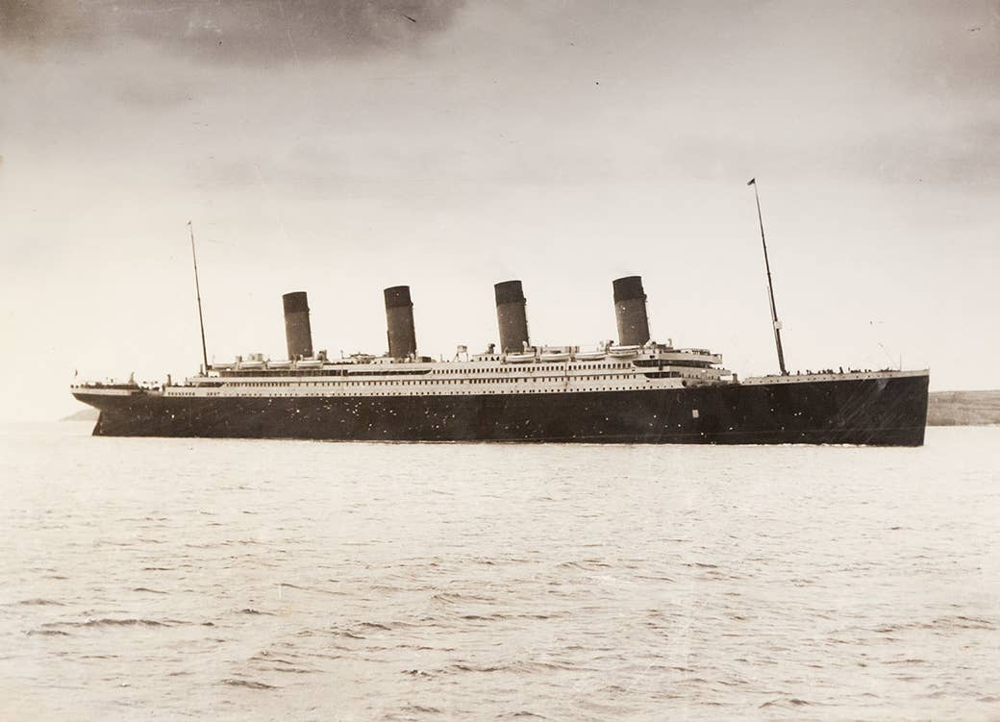
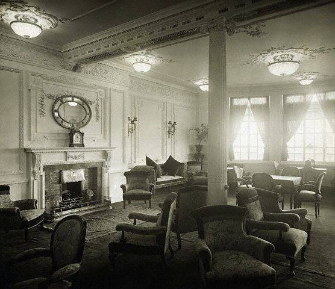
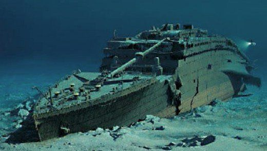
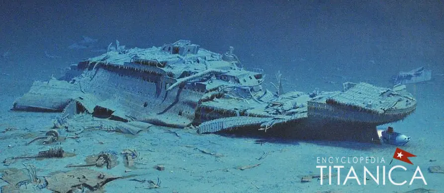
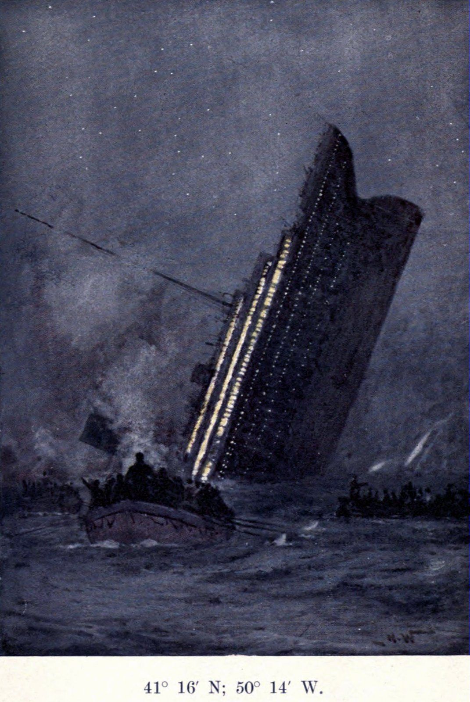
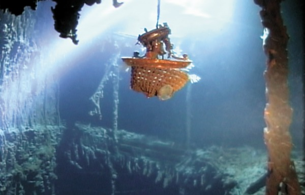
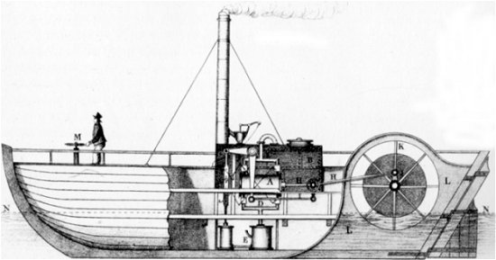
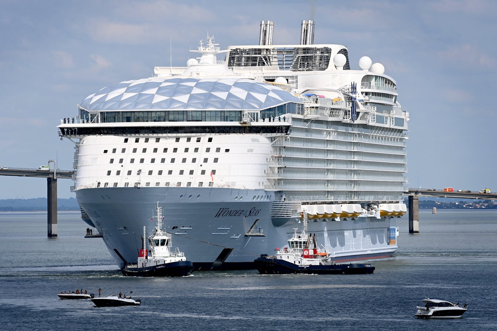

History of steam ships
Nobody actually knows who created the first ship we think that the Egyptians were the first culture t create and regulary use ships in long-distance trade, travel and exploration. Before the Egyptians, early man would lash logs together as a crude raft or hollow out logs for short-distance travel.
- In 1712 Thomas Newcomen invented the first steam engine.
- In 1783, Arguably the first really successful steamboat, the Pyroscaphe was built by Claude-François-Dorothée, Marquis de Jouffroy d’Abbans. She was a paddle steamer whereby a steam engine would power sidewheels, or paddles, that would move the vessel through the water.
- Then in 1801, Scottish engineer William Symington had been working on ways to improve and adapt James Watt’s engine for marine use (using paddle wheels). With the sponsorship of Lord Dundas, Symington patented an engine in 1801 that would be installed in a new steamboat, the Charlotte Dundas (named for Lord Dundas’ daughter). She was launched in 1803 and was successful in towing barges along the Forth and Clyde Canal.
- After that in 1807, The North River Steamboat, also known as the Clermont, was built and used on the Hudson River. She was the first commercially successful steamboat (built to carry passengers).
- In 1819, The SS Savannah became the first steamship to sail across the Atlantic. Some contend this honour as she spent the majority of the voyage under sail rather than using steam power (steamships would also be fitted with sails as an alternative source of power).
- In 1821, The Aaron Manby became the first iron steamship to go to sea, crossing the English Cannel in 1822. The use of iron and new materials in ship construction would help in the development and application of steam power at sea.
- In 1836, Inventors John Ericsson and Francis Smith re-invent the screw propeller. Moving away from paddles, screw propellers, fitted to the underneath of the aft of the ship, would mean that ships could travel faster than before. They were also more reliable and less prone to damage than paddles as they were below the waterline.
- And in 1838, SS Archimedes was the first steamship driven by a screw propeller.
- Then in 1843, the SS Great Britain, the first large iron ship to be screw propelled was launched.
- After that in 1845 HMS Terror and HMS Erebus became the first Royal Navy ships to be fitted with steam engines and a screw propeller prior to Franklin’s final expedition to find the Northwest Passage.
- 1858, the maiden voyage of Brunel’s SS Great Eastern. At 20,000 GRT, she was the largest liner of the late 19th century.
- 1865, the launch of the SS Agamemnon, one of the first successful long-distance merchant steamships. Long voyages, such as Europe to Asia, were not practical for steamships due to the need to carry coal, leaving little space for produce. Agamemnon was fitted with a new compound engine that required less coal.
- 1869, the Suez Canal opened. The waterway was not practical for sailing vessels so steamships dominated the new route to Asia.
- 1881, the SS Aberdeen became the first ship to be successfully powered by a triple-expansion steam engine. The triple expansion engine was significantly more economical than other engines so became widely used in shipping.
- 1894, the Turbinia became the first steam turbine-powered steamship to be built and was the fastest ship in the world at the time. She was demonstrated at the Spithead Navy Review in 1897 and transformed maritime engineering.
- 1903, alternatives to steam power that were more efficient and economical were being sought. The Vandal, launched in 1903, was one of the first marine vessels to be powered by diesel.
- 1906, RMS Mauretania became one of the first ocean liners to use the steam turbine engine. The use of electricity as a power source was cheaper and more efficient and was soon adopted by shipping companies and navies. Most ships today use steam turbines.
- 1912, the sinking of the RMS Titanic, the largest steamship in the world at the time.
- 1938, launch of RMS Queen Elizabeth, the largest passenger steamship ever built.
- 1959, the first nuclear-powered merchant ship was launched. The NS Savannah was commissioned by the US government as a way of demonstrating peaceful uses of nuclear power.
- 1984, the last major passenger steamship, the Fairsky, was built.
History of Titanic
Let me give you some info about Titanic: I think you all know Titanic and that it is now at the bottom of the sea and lets say it's kind of a underwater grave yard. Do you even know why it sank? If not then let me explain. The Titanic was created by Harland and Wolff, Belfast and first launched in 31th of May and sank in the morning of April 15th, 1912 in the nothern Atlantic Ocean. But do you know where it was build well it was builded in Liverpool in England and its route was from Southampton to New York City and the owner is White Star Line. But why did it sink heres why, the capitan Edward J. Smith was kind of the cause of the disaster the capitan ignored the iceberg signals from the radio because he was to occupied with the passengers message but one of the crew members saw the iceberg and the capitan turned to Starboard but the hull of the ship scrached itself on the iceberg and water came in but not only the capitan is the problem but also the construction workers made the hull to thin because they were in a hury to finish Titanic in time and thats why when it scrached itself water came in. And the construction workers put to less life boats on deck so the first class people have more space so thats why out of 2,224 people 1,514 perished and only 710 people survived. The engines were J.P Morgan .
Warning!! These Pictures below might affect your feelings.
This is Titanic before the disaster :
 And this is Titanic After the disaster :
   OK, now that you know that we don't know who actually created the first ship, you also know about the history of Titanic and the steam engine or ship. Now, we are going to compare some history ships with the luxourious ships today. Lets compare!
Lets compare RMS Titanic with :
Synphony of the seas

Lets compare the Charlotte Dundas :
Wonder of the seas
